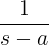
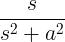
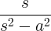
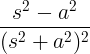
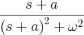
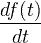
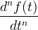
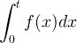
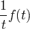
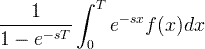

Laplace Transform
- Laplace transform function
- Laplace transform table
- Laplace transform properties
- Laplace transform examples
Laplace transform converts a time domain function to s-domain function by integration from zero to infinity
of the time domain function, multiplied by e-st.
The Laplace transform is used to quickly find solutions for differential equations and integrals.
Derivation in the time domain is transformed to multiplication by s in the s-domain.
Integration in the time domain is transformed to division by s in the s-domain.
Laplace transform function
The Laplace transform is defined with the L{} operator:

Inverse Laplace transform
The inverse Laplace transform can be calculated directly.
Usually the inverse transform is given from the transforms table.
Laplace transform table
| Function name | Time domain function | Laplace transform |
|---|---|---|
|
f (t) |
F(s) = L{f (t)} |
|
| Constant | 1 | |
| Linear | t |
|
| Power |
t n |
|
| Power |
t a |
Γ(a+1) ⋅ s -(a+1) |
| Exponent |
e at |
 |
| Sine |
sin at |
|
| Cosine |
cos at |
 |
| Hyperbolic sine |
sinh at |
|
| Hyperbolic cosine |
cosh at |
 |
| Growing sine |
t sin at |
|
| Growing cosine |
t cos at |
 |
| Decaying sine |
e -at sin ωt |
|
| Decaying cosine |
e -at cos ωt |
 |
| Delta function |
δ(t) |
1 |
| Delayed delta |
δ(t-a) |
e-as |

Laplace transform properties
| Property name | Time domain function | Laplace transform | Comment |
|---|---|---|---|
|
f (t) |
F(s) |
||
| Linearity | a f (t)+bg(t) | aF(s) + bG(s) | a,b are constant |
| Scale change | f (at) |
|
a>0 |
| Shift | e-at f (t) | F(s + a) | |
| Delay | f (t-a) | e-asF(s) | |
| Derivation |  | sF(s) - f (0) | |
| N-th derivation |  | snf (s) - sn-1f (0) - sn-2f '(0)-...-f (n-1)(0) | |
| Power | t n f (t) |
|
|
| Integration |  |
|
|
| Reciprocal |  |
|
|
| Convolution | f (t) * g (t) | F(s) ⋅ G(s) | * is the convolution operator |
| Periodic function | f (t) = f (t+T) |  |
Laplace transform examples
Example #1
Find the transform of f(t):
f (t) = 3t + 2t2
Solution:
ℒ{t} = 1/s2
ℒ{t2} = 2/s3
F(s) = ℒ{f (t)} = ℒ{3t + 2t2} = 3ℒ{t} + 2ℒ{t2} = 3/s2 + 4/s3
Example #2
Find the inverse transform of F(s):
F(s) = 3 / (s2 + s - 6)
Solution:
In order to find the inverse transform, we need to change the s domain function to a simpler form:
F(s) = 3 / (s2 + s - 6) = 3 / [(s-2)(s+3)] = a / (s-2) + b / (s+3)
[a(s+3) + b(s-2)] / [(s-2)(s+3)] = 3 / [(s-2)(s+3)]
a(s+3) + b(s-2) = 3
To find a and b, we get 2 equations - one of the s coefficients and second of the rest:
(a+b)s + 3a-2b = 3
a+b = 0 , 3a-2b = 3
a = 3/5 , b = -3/5
F(s) = 3 / 5(s-2) - 3 / 5(s+3)
Now F(s) can be transformed easily by using the transforms table for exponent function:
f (t) = (3/5)e2t - (3/5)e-3t
See also
CALCULUS
- Limit
- Derivative
- Integral
- Series
- Laplace transform
- Convolution
- Calculus symbols
RAPID TABLES